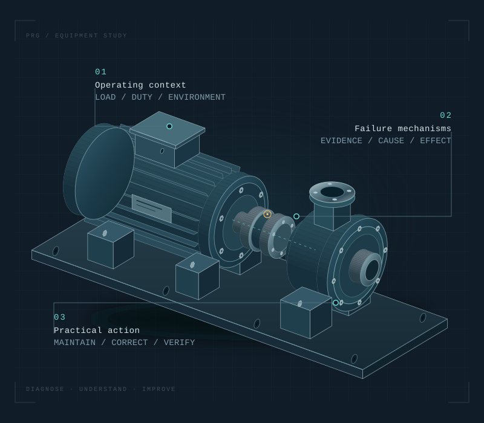

A CLEARER PATH TO RELIABILITY
Find the cause.
Build the plan.
Equipment assessments, practical maintenance programs, and failure investigations that give your team a clear next step.
HANDS-ON KNOWLEDGE. EVIDENCE-BASED RECOMMENDATIONS.

Understand the component. Consider the whole system.
THE WORK BEHIND BETTER RELIABILITY
A recurring problem
deserves a closer look.
The same component fails again. Maintenance tasks keep accumulating. A critical machine has no clear plan.
Prime Reliability Group helps connect the equipment, its operating conditions, and its maintenance history. We turn those findings into priorities, procedures, and corrective actions your team can put to work.
See how we work01 / OUR SERVICES
Technical insight.
Practical direction.
Focused engagements for equipment questions, maintenance gaps, and failures that need a better explanation.
01Equipment assessmentsUnderstand condition. Identify priorities.
Evaluate a defined asset group or production area to understand observed condition concerns, maintenance gaps, and equipment risks.
A useful starting point for aging equipment, unfamiliar assets, or a focused reliability improvement effort.
Discuss an assessmentWhat you receive
- Documented observations and available-history review
- Equipment criticality and maintenance-gap assessment
- Prioritized recommendations with their technical basis
- A review of findings with maintenance and operations
02Maintenance programsGive every task a purpose.
Develop or refine equipment-specific maintenance using OEM guidance, operating conditions, failure history, and the experience of your technicians and operators.
A useful starting point for new equipment, inconsistent PMs, or tasks that need a clearer technical basis.
Discuss your maintenance planWhat you receive
- Tasks linked to relevant failure modes and requirements
- Intervals or condition-based triggers with supporting rationale
- Methods, inspection criteria, resources, and follow-up actions
- Procedures and task lists organized for your maintenance system
03Failure investigations & RCAFollow the evidence behind the failure.
Investigate recurring or significant failures through physical evidence, event history, operating conditions, and maintenance practices. Root-cause analysis connects supported findings to practical corrective options.
A useful starting point for repeat breakdowns, premature wear, unexplained damage, or a significant equipment failure.
Discuss a failureWhat you receive
- A defined problem, event sequence, and evidence review
- Supported causes and contributing conditions
- Open questions and further testing needs, where applicable
- Corrective recommendations and an effectiveness-review plan
04Corrective actions & supportCarry the findings into the work.
Work alongside your team to evaluate corrective options, prioritize improvements, update maintenance tasks, and review results through a defined support engagement.
A useful starting point for teams that need continuing reliability expertise alongside their existing maintenance staff.
Discuss ongoing supportWhat you receive
- A prioritized corrective-action register
- Technical review of proposed changes and next steps
- Scheduled failure reviews and implementation follow-up
- Maintenance-plan updates as operating experience develops
BUILT TO BE USED
Clarity your team
can act on.
A useful deliverable answers the next question: what needs attention, why it matters, and what should happen next.
We agree on the format and level of detail at the start, so findings can become work orders, maintenance tasks, or decisions.
Talk through your scopeEQUIPMENT RELIABILITY REVIEW
From concern to next step.
Recurring bearing damage on a production pump.
Failed components, installation records, operating conditions, and previous repairs.
Investigate the failure mechanism before selecting a corrective change.
EQUIPMENT MAINTENANCE PLAN
Make the task executable.
Identify the failure mode, inspection method, required skill, and resources.
Use application conditions, OEM guidance, and available history to establish a trigger or interval.
Record acceptance criteria and the action required when a finding falls outside them.
FAILURE INVESTIGATION
Show the reasoning.
Define what failed, the event sequence, operating impact, and available evidence.
Distinguish supported causes, contributing conditions, and hypotheses that need further testing.
Recommend actions, assign priorities, and agree on how effectiveness will be reviewed.
Example structure only. Actual findings and deliverables depend on the agreed engagement.
02 / OUR APPROACH
Evidence first.
A clear path forward.
Your technicians and operators know the equipment. Their experience is part of the investigation.
- 01 / DEFINE
Start with the concern.
Understand the equipment, symptoms, operating impact, and decisions you need to make. Agree on scope and deliverables.
- 02 / EXAMINE
Review the evidence.
Examine available records and equipment conditions. Work with maintenance and operations to understand the application.
- 03 / RECOMMEND
Make the findings useful.
Explain the technical basis, document remaining questions, and prioritize practical recommendations.
- 04 / FOLLOW THROUGH
Review the next steps.
Walk through the results with your team and define implementation or verification support where needed.
03 / PRIME RELIABILITY GROUP
Hands-on knowledge.
A diagnostic mindset.
Our approach brings together machinery design, fabrication, machining, maintenance, and troubleshooting. That perspective helps connect an equipment symptom with the system around it.
We work alongside your people to develop recommendations that fit the equipment, the application, and the work your team needs to carry out.
Let’s discuss your operationUnderstand
the machine.
Respect the
operation.
BEFORE WE BEGIN
A few practical
questions.
Every engagement starts with the equipment and the decision you need to make.
Can you improve a maintenance program we already have?
Yes. A project can focus on reviewing existing tasks, identifying gaps or duplication, and improving methods, intervals, and inspection criteria for a defined group of assets.
Do we need a complete maintenance history?
Available records help, but we can discuss the information and equipment access you have. Missing evidence and its effect on the findings are identified as the scope develops.
Do you offer one-time projects and ongoing support?
Both. Work can be scoped as an individual assessment or investigation, a maintenance-program project, or scheduled support with defined activities, capacity, and deliverables.
Can we use the deliverables in our maintenance system?
The required format is agreed at the start. Tasks, procedures, and action lists can be organized for your team to enter or import, according to the system requirements and project scope.
What should we share for an initial discussion?
Start with the equipment type, manufacturer and model if known, the symptoms or concern, previous repairs, and the operating impact. We can then identify which records or site access would help establish the scope.
LET’S START WITH THE EQUIPMENT
What keeps
coming back?
Tell us what is happening, what has been tried, and what you need to understand. We’ll discuss a practical starting point.
Based in Louisiana
Project location, access, and availability are agreed when defining the scope.
Discuss a project
Prepare an inquiry to send from your email app.
Your inquiry is ready. Open the email draft to review and send it.
Review inquiry text
If no email app opens, copy the inquiry and send it to Inquiry@primereliabilitygroup.com.